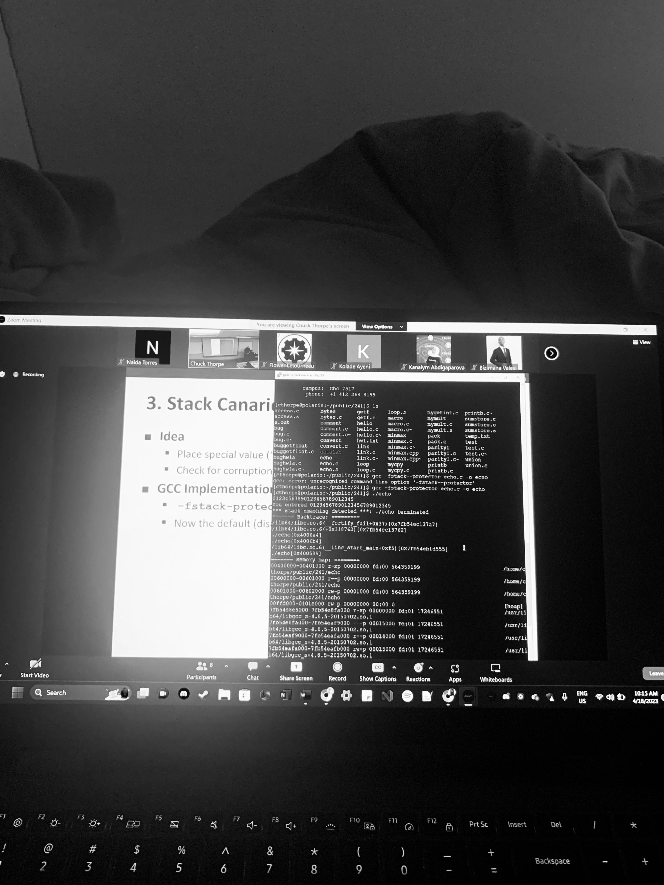

Background Image by Taylor Deas-Melesh.
My name is Naida Torres and am currently a senior at Clarkson University, double majoring in computer science and data science. I am currently looking for internship and full-time opportunities to further my education specifically with machine learning and data analysis. I have research experience doing in-depth development and analysis of data sets involving genotypes and probability. This work has had real life implications, being used in court cases, shedding a light on the systemic challenges faced by society and judicary at large. Additionally, I have in class, collaborative process experience, creating a MySQL database and ETL warehouse and led the successful development of a robust ‘Slack-’based messaging system using Java.
Education and career aside, I was born and raised in the Bronx. Growing up in such a diverse area allowed me to meet so many different people and appreciate culture at its core. I enjoy gaming, baking, scrapbooking, and spending time with my friends. Gaming introduced me to this career path, and I am thankful for the opportunities I have been given. I strive to make an impact for not only women in STEM, but specifically hispanic women in data science, as we are few and far between.
Thank you for taking the time to read about me! Feel free to contact me by email at naidatorres5133@gmail.com.

Code Image by Me!